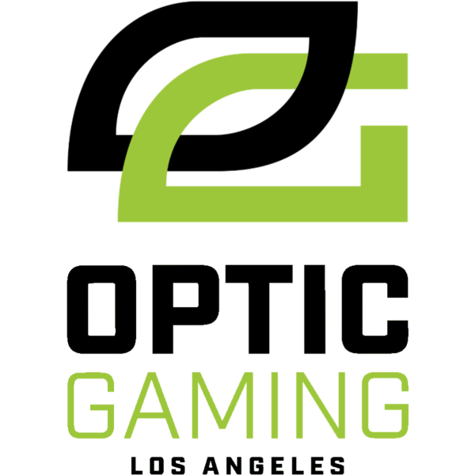

About Us
Optic Gaming continues to connect with the fanbase through content creation and by maintaining the best competitive teams in the world. In late 2021, OpTic merged with powerhouse Esports organization Envy in order to keep pushing the scene forward. With the introduction of franchising in Call of Duty Esports in 2020, the Green Wall is represented by OpTic Texas.
Optic Gaming is also competing in several Esports such as Halo, Apex Legends, and Rocket League. All OpTic members can be found in content on the main YouTube channel and social media pages. After a decade and a half, OpTic continues to be one of the powerhouse organizations in the gaming industry. Having been built by brick, the Green Wall remains strong.